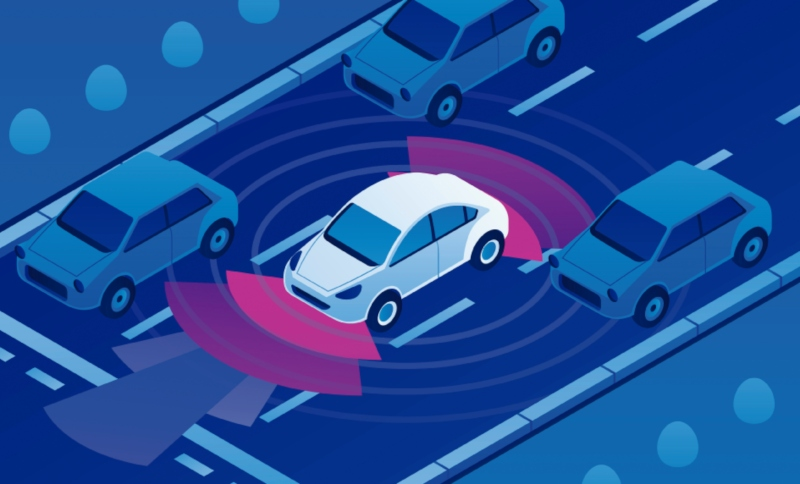

Carros Autônomos e IA
Os carros autônomos são veículos que utilizam IA para tomar decisões em tempo real, identificando objetos ao redor, como pedestres e outros veículos. Essa tecnologia depende de câmeras e sensores que ajudam a identificar o ambiente com precisão.
Segurança e IA em Carros Autônomos
A segurança é uma preocupação central. A IA dos veículos usa imagens de captchas resolvidos para melhorar o reconhecimento de pessoas e objetos, o que ajuda a evitar acidentes. Com a evolução dos algoritmos, esses carros se tornam cada vez mais confiáveis e eficientes.
Carros autônomos dependem da IA para navegação e segurança em tempo real.
Impacto na Sociedade
Carros autônomos podem reduzir acidentes causados por erro humano e melhorar a mobilidade para pessoas com deficiências. No entanto, também levantam questões éticas e de emprego, pois motoristas profissionais podem ser impactados.